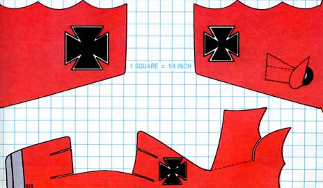

If you're looking for distance or a loop-the-loop, try flying . . .
MOTHER'S BIPLANE GLIDER You can buy a variety of inexpensive and easy-to-assemble gliders from nearly any toy-shop . . . but somehow, it's just not the same as making one! So we'd like to offer a build-it-yourself mini-sailplane that we think you'll find as innovative and high-performance as any of the commercial models.
After cutting out a hangarful of prototypes, we settled on the dimensions shown on the template . . . and for your first glider, we encourage you to follow our pattern as carefully as possible with sharp scissors or an X-actotype knife. Later, once you've had time to adjust the airfoils and learn the glider's ways, you may want to experiment with designs of your own.
The series of construction photos shows how the fuselage and wings are made. Lay out the pattern along the seam of a manila envelope and cut through both thicknesses to yield three folded pieces. The envelopes are the best material we've found for lightness and strength, but they do have the disadvantage that they can't be decorated with any liquid. (The "Red Baron" model shown was made from a file folder and then painted. It flies reasonably well, but it isn't capable of the extended journeys that the manila craft can achieve.)
To avoid stalls and to add stability, we sandwiched a ball of modeling clay about 3/8" in diameter into the nose (slightly less ballast is required if you're building a glider that you wish to perform a loop or to return). Furthermore, though this lightweight sailplane is intended primarily for indoor use, folding the lower wing up-by pushing in the center of the bottom airfoil with a pencil-to form a monoplane helps increase the craft's stability in a light breeze.
You'll be surprised by how well the biplane glides. Indeed, this simple toy should provide hours of fascination for youngsters-and others who fancy a temporary (and admittedly vicarious) flight from gravity!
|
STAFF PHOTOS |
 |
|